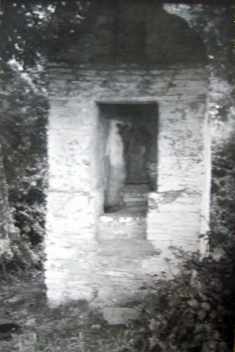

Miejsca warte odwiedzenia
1. Cerkiew i cmentarz
Zabytkowa cerkiew greckokatolicka pw. Opieki NMP wraz z dzwonnicą i cmentarzem to serce dawnego Kopysna.


2. Grodzisko i Zamczysko
Ślady wczesnośredniowiecznego grodu w lesie "Grabnik".
3. Miejsce po dworze
Teren, na którym stał dwór rodziny Tyszkowskich, z pozostałościami stawu i wałów.
4. Kopystanka
Góra Kopystanka (541 m n.p.m.) oferująca wspaniałe widoki na okolicę.
5. Krzyż choleryczny
Pamiątka po epidemii cholery z 1915 roku.